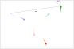
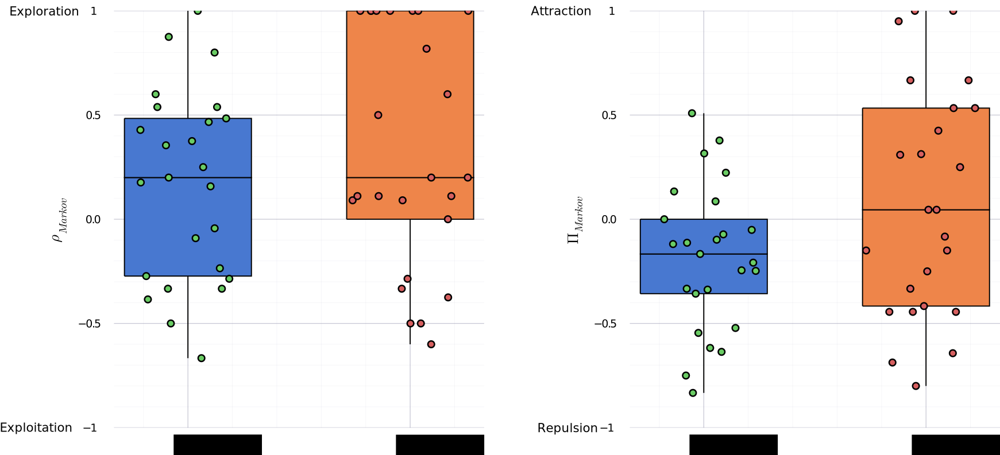

Assessing chemical preference of young zebrafish
Benjamin Gallois
I. FastTrack: a general purpose tracking software
Image-based tracking
Locating objects over time from a video recording.
Challenges
- Object detection
- Complex object interactions
- Trade-off accuracy / specialization
- Trade-off accuracy / speed
Tracking in the lab
- Controlled lighting
- Uniform background
- Good image quality
- Often quasi 2D
- Low fault tolerance
- Minimal human interventions
- Versatile
Existing software
Properties-based
Use dynamic properties to keep the identities (Rodriguez, Alvaro, et al. 2018)
- Fast
- Error propagation
Individuals-based
Extract a fingerprint for each individual (Romero-Ferrero, Francisco, et al. 2019)
- Computationally intensive
- Close to perfect accuracy
Two-Dimensional tracking Dataset
- 41 movies under CC BY-NC-SA 4.0 license
- 7 animal species (from cells to mice)
- Active particles
- Microfluidic droplets
- Macrocopic objects
- http://chat.ljp.upmc.fr/datasets/TD2/
FastTrack: a general tracking software
- Fast and automatic tracking algorithm
- Ergonomic correction tool
Detection
Matching
Keep the identity of the objects from one image...
Matching
To the next.
Matching
$$c_{11}=\frac{d_{11}}{s_d} + \frac{a_{11}}{s_a}$$Matching
 $$c_{12}=\frac{d_{12}}{s_d} + \frac{a_{12}}{s_a}$$Matching
$$c_{13}=\frac{d_{13}}{s_d} + \frac{a_{13}}{s_a}$$Matching
 $$C = \begin{bmatrix} c_{11} &
c_{12} & c_{13}\\ & & \\ & & \end{bmatrix}$$
$$C = \begin{bmatrix} c_{11} &
c_{12} & c_{13}\\ & & \\ & & \end{bmatrix}$$
Matching
Soft cost
$$c_{ij} = \frac{\delta d_{ij}}{s_d} + \frac{\delta a _{ij}}{s_{a}} + \frac{...}{...}$$Hard cost
- Distance: if $d_{ij}>h_d$, then $c_{ij} = \infty$
- Memory: if object $i$ lost more than $h_t$ time, then remove the $i^{th}$ line
Global optimization
Best assignment possible using Hungarian algorithm (J. Munkres, 1957)
Post processing
- Keyboard and mouse shortcuts
- Swap, delete ids
- Annotation frame by frame (Sturman, Oliver, et al., 2020)
Performance
Dataset classification
- Metric to classify tracking difficulty
- Does not necessitate groundtruth trajectories
- Robust to tracking errors
Incursion
Incursion: object exits its Voronoï cell defined at a time $t$, after a travel time $\tau$.

Reduced displacement

Reduced displacement $\rho=r\sqrt{d}$
- Typical distance to neighbors $\rho=1$
- Typical distance to Voronoï cell edges $\rho=\frac{1}{2}$
Geometric probability of incursion

Geometric probability of incursion: proportion of angles for which incursions occur for a given displacement $\rho$.
Per Voronoï cell$$p(\rho)=\frac{\color{red}{\Sigma_{out}(\rho)}}{\color{red}{\Sigma_{out}(\rho)} \color{black}{+}\color{blue}{\Sigma_{in}(\rho)}} $$ $$p(\rho)=\frac{\color{red}{\Sigma_{out}(\rho)}}{2\pi}$$
Geometric probability of incursion

To account for many shapes and sizes:
$$p_{inc}(\rho)=\left< p(\rho) \right>_{cells}$$
Probability of incursion
If the dynamics is uncorrelated with the geometric properties of the Voronoï cells: $$\color{green}{P_{inc}} = \int_{0}^{\infty} \color{blue}{R(\rho)} \color{red}{p_{inc}(\rho)} \,d \rho $$
- $P_{inc}$ probability of incursion
- $R(\rho)$ distribution of displacements at the timescale $\tau$
- $p_{inc}(\rho)$ geometric probability of incursion
Probability of incursion
At $\tau=1$, $P_{inc}$ highly sensitive to tracking errors that shift $R(\rho)$ to the right.
Timescale analysis

$$P_{inc} = \frac{L}{1 + exp(-k .log(\frac{\tau}{\tau_0}))}$$
Timescale analysis

$$\delta = \frac{N_{err}}{N_{obj}}$$
Insensitive up to 1 error every 1000 detections.
Timescale analysis
ZFJ_001 very difficult movie: $$\delta \approx 0.003$$ without post-processing.
Optimal framerate
- Oversampled: lot of storage space, higher processing time
- Undersampled: lot of incursions, higher post-processing time
- $\tau_1<1$: undersampled
- $\tau_1>1$: oversampled
Define $\tau_1$ the timescale at which the incursion probability is equal to a single incursion in the whole movie.
Conclusion
- Easy to install
- Available on Linux, MacOS and Windows
- Versatile
- Open-source & API documented
- New measure of trackability with $P_{inc}$
- $\tau_1$ a criterion to find the optimal experimental framerate
II. Assessing chemical preference of young zebrafish
Chemical perception
(Hara, Toshiaki J., 2012) (Yarmolinsky, David A., Charles S. Zuker, and Nicholas JP Ryba, 2009)- Most ancien sensory system dating back 500 millions years ago
- Wide range of taxa: unicellular to mamalian
- Highly conservated features
- The most used sensory modality
- Mediate feeding and reproduction
Olfaction
(Laberge, Frédéric, and Toshiaki J. Hara., 2001)- Olfactory epithelium (snout) projecting into the olfactory bulb (brain)
- Mediate feeding, reproduction, fright reaction
Gustation
- Taste buds located on the head, lips, oropharyngeal cavity and barbels
- Mediate feeding, reproduction
Common chemical sense
- Solitary chemosensory cells in the epidermis
The zebrafish
- Small and robust vertebrate
- Well studied chemical senses: first odor responses $\approx$ 3 dpf (Li, Jun, et al., 2005)
- Various behaviors: phototaxis, OMR, predation
- Whole brain imaging using lightsheet microscopy and transgenic larval fish(Panier, Thomas, et al., 2013)
Zebrafish phototaxis
- Light-seeking navigation
- Spatial & temporal phototaxis
- Map behavior onto a neuronal model
Assessing chemical preference
- Biological noise
- Chemical noise: intermittency, concentration variations
- Find an attractive product
- Study chemically-driven navigation
- Neuro-imaging (Candelier, Raphaël, et al., 2015)
Assessing chemical preference
Mandatory product screening
- What product?
- What concentration?
- What age?
Time consuming experimental work.
Dual
- High-throughput screening setup
- Do It Yourself setup easy to replicate and scalable
- Open source, robust and versatile
- Separate the tank in two compartments
- Precisely controlled concentration
- Fish can choose its prefered side

Dye
- Infrared, biocompatible, chemically inert, neutral
- Silicone oil emulsion prepared by Léa-Laetitia Pontani
- $\approx 0.5 mL$ for $1 L$ of solution
Experimental protocol

Analysis
- Complex image analysis problem
- Complex behavior
Markov model


Markov-based analysis
- $\rho_{Markov} = 1$ exploration
- $\rho_{Markov} = -1$ exploitation
- $\rho_{Markov} = 0$ mixed behavior
- $\Pi_{Markov} = 1$ attraction
- $\Pi_{Markov} = -1$ repulsion
- $\Pi_{Markov} = 0$ neutral
Numerical simulation

- All $(p,b)$ are not accessible: sequence length & p and b rational numbers
- Strong preference $\implies$ exploitation
Numerical simulation

- All $(p,b)$ are not accessible: sequence length & p and b rational numbers
- Strong preference $\implies$ exploitation
Numerical simulation

- All $(p,b)$ are not accessible: sequence length & p and b rational numbers
- Strong preference $\implies$ exploitation
Numerical simulation

- All $(p,b)$ are not accessible: sequence length & p and b rational numbers
- Strong preference $\implies$ exploitation
Dye effect
Product screening
- Citric acid: repulsive on adult zebrafish (Abreu, Murilo S., et al. 2016)
- ATP: attractive on adult zebrafish
(Wakisaka, Noriko, et
al. 2017)
- 2 weeks zebrafish
- ATP: 24h of starvation before assessment
Citric acid
ATP

ATP: fish by fish

Conclusion and perspective
Acquisition
- Forced bath experiment
Conclusion and perspective
ATP persistence
- Add more cycles
Conclusion and perspective
ATP fish age
- Effect not present for larval zebrafish $\approx$ 7 days
- Check on Danionella translucida